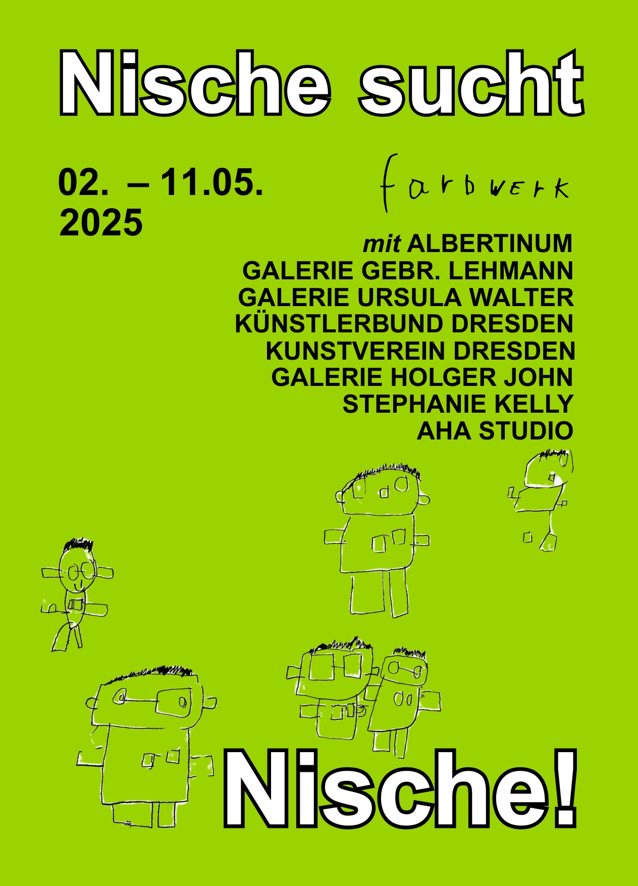

Ausstellung
Nische sucht Nische
Galeriespaziergang, Dresden 2025
In Sachsen findet das künstlerische Schaffen von und mit Künstler*innen mit Behinderungen – trotz einer kleinen, aufstrebenden Szene – bislang kaum öffentliche Beachtung. Zum 5. Mai, dem Europäischen Protesttag zur Gleichstellung von Menschen mit Behinderung, setzte farbwerk gemeinsam mit Dresdner Galerien ein Zeichen für mehr Teilhabe in der Kunst.
Unter dem Titel „Nische sucht Nische“ schufen acht Dresdner Galerien gezielt Raum für Werke von Künstler*innen mit Behinderung – darunter das Albertinum, die Galerie Gebr. Lehmann, die Galerie Ursula Walter, der Künstlerbund Dresden, der Kunstverein Dresden e.V., die Galerie Holger John, die Galerie Stephanie Kelly sowie das AHA Studio.
- 

Künstler*innen
Mara Fink, Sandy Heinze, Rüdiger Johne, Robert Laubner, Viktor Lenk, Joe Richter, Philipp
Sandner, Miguel Schultze
Idee und Konzept
Jacqueline Hamann
Projektleitung
Hanna Zeyer
Ausstellungsaufbau
André Tempel